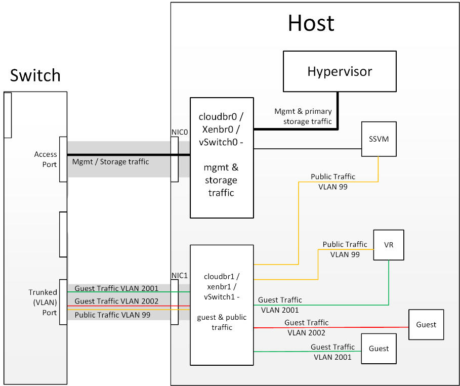

简介¶
主存储¶
CloudStack is designed to work with a wide variety of commodity and enterprise-rated storage systems. CloudStack can also leverage the local disks within the hypervisor hosts if supported by the selected hypervisor. Storage type support for guest virtual disks differs based on hypervisor selection.
| Storage Type | XenServer | vSphere | KVM |
|---|---|---|---|
| NFS | Supported | Supported | Supported |
| iSCSI | Supported | Supported via VMFS | Supported via Clustered Filesystems |
| Fiber Channel | Supported via Pre-existing SR | Supported | Supported via Clustered Filesystems |
| Local Disk | Supported | Supported | Supported |
The use of the 集群 Logical Volume Manager (CLVM) for KVM is not officially supported with CloudStack.
二级存储¶
CloudStack is designed to work with any scalable secondary storage system. The only requirement is that the secondary storage system supports the NFS protocol. For large, multi-zone deployments, S3 compatible storage is also supported for secondary storage. This allows for secondary storage which can span an entire region, however an NFS staging area must be maintained in each zone as most hypervisors are not capable of directly mounting S3 type storage.
Configurations¶
Small-Scale Setup¶
In a small-scale setup, a single NFS server can function as both primary and secondary storage. The NFS server must export two separate shares, one for primary storage and the other for secondary storage. This could be a VM or physical host running an NFS service on a Linux OS or a virtual software appliance. Disk and network performance are still important in a small scale setup to get a good experience when deploying, running or snapshotting VMs.
Large-Scale Setup¶
In large-scale environments primary and secondary storage typically consist of independent physical storage arrays.
Primary storage is likely to have to support mostly random read/write I/O once a template has been deployed. Secondary storage is only going to experience sustained sequential reads or writes.
In clouds which will experience a large number of users taking snapshots or deploying VMs at the same time, secondary storage performance will be important to maintain a good user experience.
It is important to start the design of your storage with the a rough profile of the workloads which it will be required to support. Care should be taken to consider the IOPS demands of your guest VMs as much as the volume of data to be stored and the bandwidth (MB/s) available at the storage interfaces.
存储架构¶
There are many different storage types available which are generally suitable for CloudStack environments. Specific use cases should be considered when deciding the best one for your environment and financial constraints often make the ‘perfect’ storage architecture economically unrealistic.
Broadly, the architectures of the available primary storage types can be split into 3 types:
Local Storage¶
Local storage works best for pure ‘cloud-era’ workloads which rarely need to be migrated between storage pools and where HA of individual VMs is not required. As SSDs become more mainstream/affordable, local storage based VMs can now be served with the size of IOPS which previously could only be generated by large arrays with 10s of spindles. Local storage is highly scalable because as you add hosts you would add the same proportion of storage. Local Storage is relatively inefficent as it can not take advantage of linked clones or any deduplication.
Network Configuration For Storage¶
Care should be taken when designing your cloud to take into consideration not only the performance of your disk arrays but also the bandwidth available to move that traffic between the switch fabric and the array interfaces.
CloudStack 存储网络¶
The first thing to understand is the process of provisioning primary storage. When you create a primary storage pool for any given cluster, the CloudStack management server tells each hosts’ hypervisor to mount the NFS share or (iSCSI LUN). The storage pool will be presented within the hypervisor as a datastore (VMware), storage repository (XenServer/XCP) or a mount point (KVM), the important point is that it is the hypervisor itself that communicates with the primary storage, the CloudStack management server only communicates with the host hypervisor. Now, all hypervisors communicate with the outside world via some kind of management interface – think VMKernel port on ESXi or ‘Management Interface’ on XenServer. As the CloudStack management server needs to communicate with the hypervisor in the host, this management interface must be on the CloudStack ‘management’ or ‘private’ network. There may be other interfaces configured on your host carrying guest and public traffic to/from VMs within the hosts but the hypervisor itself doesn’t/can’t communicate over these interfaces.
 Figure 1: Hypervisor communications
Separating 主存储 traffic For those from a pure virtualisation background, the concept of creating a specific interface for storage traffic will not be new; it has long been best practice for iSCSI traffic to have a dedicated switch fabric to avoid any latency or contention issues. Sometimes in the cloud(Stack) world we forget that we are simply orchestrating processes that the hypervisors already carry out and that many ‘normal’ hypervisor configurations still apply. The logical reasoning which explains how this splitting of traffic works is as follows:
- If you want an additional interface over which the hypervisor can communicate (excluding teamed or bonded interfaces) you need to give it an IP address.
- The mechanism to create an additional interface that the hypervisor can use is to create an additional management interface
- So that the hypervisor can differentiate between the management interfaces they have to be in different (non-overlapping) subnets
- In order for the ‘primary storage’ management interface to communicate with the primary storage, the interfaces on the primary storage arrays must be in the same CIDR as the ‘primary storage’ management interface.
- Therefore the primary storage must be in a different subnet to the management network
 Figure 2: Subnetting of Storage Traffic
Figure 2: Subnetting of Storage Traffic
 Figure 3: Hypervisor Communications with Separated Storage Traffic
Figure 3: Hypervisor Communications with Separated Storage Traffic
Other 主存储 Types If you are using PreSetup or SharedMountPoints to connect to IP based storage then the same principles apply; if the primary storage and ‘primary storage interface’ are in a different subnet to the ‘management subnet’ then the hypervisor will use the ‘primary storage interface’ to communicate with the primary storage.
Small-Scale Example Configurations¶
In this section we go through a few examples of how to set up storage to work properly on a few types of NFS and iSCSI storage systems.
Linux NFS on Local Disks and DAS¶
This section describes how to configure an NFS export on a standard Linux installation. The exact commands might vary depending on the operating system version.
Install the RHEL/CentOS distribution on the storage server.
If the root volume is more than 2 TB in size, create a smaller boot volume to install RHEL/CentOS. A root volume of 20 GB should be sufficient.
After the system is installed, create a directory called /export. This can each be a directory in the root partition itself or a mount point for a large disk volume.
If you have more than 16TB of storage on one host, create multiple EXT3 file systems and multiple NFS exports. Individual EXT3 file systems cannot exceed 16TB.
After /export directory is created, run the following command to configure it as an NFS export.
# echo "/export <CIDR>(rw,async,no_root_squash,no_subtree_check)" >> /etc/exportsAdjust the above command to suit your deployment needs.
- Limiting NFS export. It is highly recommended that you limit the NFS export to a particular subnet by specifying a subnet mask (e.g.,”192.168.1.0/24”). By allowing access from only within the expected cluster, you avoid having non-pool member mount the storage. The limit you place must include the management network(s) and the storage network(s). If the two are the same network then one CIDR is sufficient. If you have a 独立存储网络 you must provide separate CIDR’s for both or one CIDR that is broad enough to span both.
The following is an example with separate CIDRs:
/export 192.168.1.0/24(rw,async,no_root_squash,no_subtree_check) 10.50.1.0/24(rw,async,no_root_squash,no_subtree_check)
- Removing the async flag. The async flag improves performance by allowing the NFS server to respond before writes are committed to the disk. Remove the async flag in your mission critical production deployment.
Run the following command to enable NFS service.
# chkconfig nfs onEdit the /etc/sysconfig/nfs file and uncomment the following lines.
LOCKD_TCPPORT=32803 LOCKD_UDPPORT=32769 MOUNTD_PORT=892 RQUOTAD_PORT=875 STATD_PORT=662 STATD_OUTGOING_PORT=2020
Edit the /etc/sysconfig/iptables file and add the following lines at the beginning of the INPUT chain.
-A INPUT -m state --state NEW -p udp --dport 111 -j ACCEPT -A INPUT -m state --state NEW -p tcp --dport 111 -j ACCEPT -A INPUT -m state --state NEW -p tcp --dport 2049 -j ACCEPT -A INPUT -m state --state NEW -p tcp --dport 32803 -j ACCEPT -A INPUT -m state --state NEW -p udp --dport 32769 -j ACCEPT -A INPUT -m state --state NEW -p tcp --dport 892 -j ACCEPT -A INPUT -m state --state NEW -p udp --dport 892 -j ACCEPT -A INPUT -m state --state NEW -p tcp --dport 875 -j ACCEPT -A INPUT -m state --state NEW -p udp --dport 875 -j ACCEPT -A INPUT -m state --state NEW -p tcp --dport 662 -j ACCEPT -A INPUT -m state --state NEW -p udp --dport 662 -j ACCEPT
Reboot the server.
An NFS share called /export is now set up.
提示
When copying and pasting a command, be sure the command has pasted as a single line before executing. Some document viewers may introduce unwanted line breaks in copied text.
Linux NFS on iSCSI¶
Use the following steps to set up a Linux NFS server export on an iSCSI volume. These steps apply to RHEL/CentOS 5 distributions.
Install iscsiadm.
# yum install iscsi-initiator-utils # service iscsi start # chkconfig --add iscsi # chkconfig iscsi on
Discover the iSCSI target.
# iscsiadm -m discovery -t st -p <iSCSI Server IP address>:3260For example:
# iscsiadm -m discovery -t st -p 172.23.10.240:3260 172.23.10.240:3260,1 iqn.2001-05.com.equallogic:0-8a0906-83bcb3401-16e0002fd0a46f3d-rhel5-testLog in.
# iscsiadm -m node -T <Complete Target Name> -l -p <Group IP>:3260For example:
# iscsiadm -m node -l -T iqn.2001-05.com.equallogic:83bcb3401-16e0002fd0a46f3d-rhel5-test -p 172.23.10.240:3260Discover the SCSI disk. For example:
# iscsiadm -m session -P3 | grep Attached Attached scsi disk sdb State: running
Format the disk as ext3 and mount the volume.
# mkfs.ext3 /dev/sdb # mkdir -p /export # mount /dev/sdb /export
Add the disk to /etc/fstab to make sure it gets mounted on boot.
/dev/sdb /export ext3 _netdev 0 0
Now you can set up /export as an NFS share.
Limiting NFS export. In order to avoid data loss, it is highly recommended that you limit the NFS export to a particular subnet by specifying a subnet mask (e.g.,”192.168.1.0/24”). By allowing access from only within the expected cluster, you avoid having non-pool member mount the storage and inadvertently delete all its data. The limit you place must include the management network(s) and the storage network(s). If the two are the same network then one CIDR is sufficient. If you have a 独立存储网络 you must provide separate CIDRs for both or one CIDR that is broad enough to span both.
The following is an example with separate CIDRs:
/export 192.168.1.0/24(rw,async,no_root_squash,no_subtree_check) 10.50.1.0/24(rw,async,no_root_squash,no_subtree_check)
Removing the async flag. The async flag improves performance by allowing the NFS server to respond before writes are committed to the disk. Remove the async flag in your mission critical production deployment.